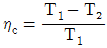
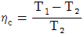
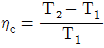
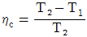
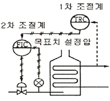

가스산업기사 (2012-03-04 기출문제)
1과목: 연소공학
1. 가연성 혼합기체가 폭발범위 내에 있을 때 점화원으로 작용할 수 있는 정전기의 방지대책으로 틀린 것은?
- 접지를 실시한다.
- 제전기를 사용하여 대전된 물체를 전기적 중성 상태로 한다.
- 습기를 제거하여 가연성 혼합기가 수분과 접촉하지 않도록 한다.
- 인체에서 발생하는 정전기를 방지하기 위하여 방전복 등을 착용하여 정전기 발생을 제거한다.
(정답률: 89%)

2. 질소와 산소를 같은 질량으로 혼합하였을 때 평균 분자량은 약 얼마인가? (단, 질소와 산소의 분자량은 각각 28, 32이다.)
- 28.25
- 28.97
- 29.87
- 30.45
(정답률: 64%)
3. 물질의 화재 위험성에 대한 설명으로 틀린 것은?
- 인화점이 낮을수록 위험하다.
- 발화점이 높을수록 위험하다.
- 연소범위가 넓을수록 위험하다.
- 착화에너지가 낮을수록 위험하다.
(정답률: 86%)
4. 다음 중 중합폭발을 일으키는 물질은?
- 히드라진
- 과산화물
- 부타디엔
- 아세틸렌
(정답률: 80%)
5. 상온, 상압하에서 메탄-공기의 가연성 혼합기체를 완전연소시킬 때 메탄 1kg을 완전연소시키기 위해서는 공기 몇 kg 이 필요한가?
- 4
- 17.3
- 19.4
- 64
(정답률: 71%)
6. 위험성평가기법 중 공정에 존재하는 위험요소들과 공정의 효율을 떨어뜨릴 수 있는 운전상의 문제점을 찾아내어 그 원인을 제거하는 정성적인 안전성평가기 법은?
- What-if
- HEA
- HAZOP
- FMECA
(정답률: 91%)
7. 다음 중 연소가스와 폭발등급이 바르게 짝지어진 것은?
- 수소 - 1등급
- 메탄 - 1등급
- 에틸렌 - 1등급
- 아세틸렌 - 1등급
(정답률: 58%)
8. 공기 중에서 폭발하한계 값이 가장 낮은 가스는?
- 수소
- 메탄
- 부탄
- 일산화탄소
(정답률: 83%)
9. 일산화탄소(CO) 10Sm3를 완전연소시키는 데 필요한 공기량은 약 몇 Sm3인가?
- 17.2
- 23.8
- 35.7
- 45.0
(정답률: 72%)
10. 가정용 연료가스는 프로판과 부탄가스를 액화한 혼합물이다. 이 혼합물이 30℃에서 프로판과 부탄의 몰비가 5 : 1로 되어 있다면 이 용기 내의 압력은 약 atm인가? (단, 30℃에서의 증기압은 프로판 9000mmHg이고, 부탄은 2400mmHg이다.)
- 2.6
- 5.5
- 8.8
- 10.4
(정답률: 57%)
11. 연료온도와 공기온도가 모두 25℃인 경우 기체연료의 이론화염온도가 옳게 표시된 것은?
- 수소 - 2252℃
- 메탄 - 3122℃
- 일산화탄소 - 4315℃
- 프로판 - 5123℃
(정답률: 74%)
12. 상온, 상압하의 수소가 공기와 혼합하였을 때 폭발 범위는 몇 %인가?
- 4.0 ~ 75.1 %
- 2.5 ~ 81.0 %
- 10.0 ~ 42.0 %
- 1.8 ~ 7.8 %
(정답률: 89%)
13. 10℃의 공기를 단열 압축하여 체적을 1/6로 하였을 때 가스의 온도는 약 몇 K인가? (단, 공기의 비열비는 1.4이다.)
- 580K
- 585K
- 590K
- 595K
(정답률: 51%)
14. 증발연소 시 발생하는 화염을 무엇이라 하는가?
- 산화화염
- 표면화염
- 확산화염
- 환원화염
(정답률: 77%)
15. 다음 중 가연성 물질이 아닌 것은?
- 프로판
- 부탄
- 암모니아
- 사염화탄소
(정답률: 78%)
16. 어떤 용기 중에 들어있는 1kg의 기체를 압축하는데 1281kg 일이 소요되었으며 도중에 3.7kcal의 열이 용기외부로 방출되었다. 이 기체 1kg 당 내부 에너지의 변화 값은 약 몇 kcal인가?
- 0.7kcal/kg
- -0.7kcal/kg
- 1.4kcal/kg
- -1.4kcal/kg
(정답률: 68%)
17. 탄화수소계 연료에서 연소 시 검댕이가 많이 발생 하는 순서를 바르게 나타낸 것은?
- 파라핀계 > 올레핀계 > 벤젠계 > 나프탈렌계
- 나프탈렌계 > 벤젠계 > 올레핀계 > 파라핀계
- 벤젠계 > 나프탈렌계 > 파라핀계 > 올레핀계
- 올레핀계 > 파라핀계 > 나프탈렌계 > 벤젠계
(정답률: 68%)
18. 고열원 T1, 저열원 T2인 카르노사이클의 열효율을 옳게 나타낸 것은?




(정답률: 81%)
19. 연소속도에 영향을 주는 요인이 아닌 것은?
- 화염온도
- 가연물질의 종류
- 지연성물질의 온도
- 미연소가스의 열전도율
(정답률: 67%)
20. 정적변화인 때의 비열인 정적비열(Cv)와 정압변화인 때의 비열인 정압비열(Cp)의 일반적인 관계로 알맞은 것은?
- Cp > Cv
- Cp < Cv
- Cp = Cv
- Cp와 Cv는 일반적인 관계가 없다.
(정답률: 86%)
2과목: 가스설비
21. -5℃에서 열을 흡수하여 35℃에 방열하는 역카르노 싸이클에 의해 작동하는 냉동기의 성능계수는?
- 0.125
- 0.15
- 6.7
- 9
(정답률: 58%)
22. 최고 사용온도가 100℃, 길이(ℓ)가 10m인 배관을 상온(15℃)에서 설치하였다면 최고 온도로 사용 시 팽창으로 늘어나는 길이는 약 몇 ㎜인가? (단, 선팽창계수는 α는 12×10-⁶m/m℃이다.)
- 5.1㎜
- 10.2㎜
- 102㎜
- 204㎜
(정답률: 74%)
23. 이음매 없는 용기 제조 시 재료시험 항목이 아닌 것은?
- 인장시험
- 충격시험
- 압궤시험
- 기밀시험
(정답률: 60%)
24. LPG와 공기를 일정한 혼합비율로 조절해 주면서 가스를 공급하는 Mixing System 중 벤투리식이 아닌 것은?
- 원료 가스압력 제어방식
- 전자밸브 개폐방식
- 공기흡입 조절방식
- 열량 제어방식
(정답률: 51%)
25. Lp가스의 연소방식 중 분젠식 연소방식에 대한 설명으로 틀린 것은?
- 일반가스기구에 주로 적용되는 방식이다.
- 연소에 필요한 공기를 모두 1차 공기에서 취하는 방식이다.
- 염의 길이가 짧다.
- 염의 온도는 1300℃ 정도이다.
(정답률: 77%)
26. 상온, 상압에서 수소용기의 파열 원인으로 가장 거리가 먼 것은?
- 과충전
- 용기의 균열
- 용기의 취급불량
- 수소취성
(정답률: 63%)
27. 원유, 중유, 나프타 등의 분자량이 큰 탄화수소 원료를 고온(800 ~ 900℃)으로 분해하여 고열량의 가스를 제조하는 방법은?
- 열분해 프로세스
- 접촉분해 프로세스
- 수소화분해 프로세스
- 대체 천연가스 프로세스
(정답률: 86%)
28. 지하 도시가스 매설배관에 Mg 과 같은 금속을 배관과 전기적으로 연결하여 방식하는 방법은?
- 희생양극법
- 외부전원법
- 선택배류법
- 강제배류법
(정답률: 88%)
29. 외경과 내역의 비가 1.2미만인 경우 배관 두께 계산식은? (단, t는 배관의 두께 수치[㎜], P는 상용압력의 수치[MPa], D는 내경에서 부식여유에 해당하는 부분을 뺀 부분의 수치[㎜], f는 재료의 인장강도 규격최소 치[N/mm2], C는 관내면의 부식여유의 수치[㎜], s는 안전율을 나타낸다.)
- t = PD/(2f/s – P)＋C
- t = PD/(2f/s＋p)＋C
- t = Ps/(2D/f – P)＋C
- t = Ps/(2D/f＋P)＋C
(정답률: 70%)
30. 황화수소(H2S)에 대한 설명으로 틀린 것은?
- 알칼리와 반응하여 염을 생성한다.
- 발화온도가 약 450℃ 정도로서 높은 편이다.
- 습기를 함유한 공기 중에서 대부분 금속과 작용한다.
- 각종 산화물을 환원시킨다.
(정답률: 73%)
31. 부취제인 EM(Ethyl Mercaptan)의 냄새는?
- 하수구 냄새
- 마늘 냄새
- 석탄가스 냄새
- 양파 썩는 냄새
(정답률: 77%)
32. 프로판의 비중을 1.5라 하면 입상 50m 지점에서의 배관의 수직방향에 의한 압력손실은 약 몇 ㎜H2O인가?
- 12.9
- 19.4
- 32.3
- 75.2
(정답률: 54%)
33. 도시가스에서 액화가스가 기화되고 다른 물질과 혼합되지 아니한 경우에 중압의 범위는?
- 0.1MPa 미만
- 0.1MPa 이상 1MPa 미만
- 1MPa 이상
- 10MPa 이상
(정답률: 88%)
34. 압축기에서 발생할 수 있는 과열의 원인이 아닌 것은?
- 증발기의 부하가 감소했을 경우
- 가스량이 부족할 때
- 윤활유가 부족할 때
- 압축비가 증대할 때
(정답률: 67%)
35. 가스액화분리장치 구성기기 중 터보 팽창기의 특징에 대한 설명으로 틀린 것은?
- 처리가스에 윤활유가 혼입되지 않는다.
- 회전수는 10000 ~ 20000rpm 정도이다.
- 처리가스량은 10000m3/h 정도이다.
- 팽창비는 약 2 정도이다.
(정답률: 80%)
36. 다음 중 재료에 대한 비파괴검사 방법이 아닌 것은?
- 타진법
- 초음파탐상시험법
- 인장시험법
- 방사선투과시험법
(정답률: 71%)
37. 양정[H] 20m, 송수량[Q] 0.25m3/min, 펌프효율[η] 0.65인 2단 터빈 펌프의 축동력은 약 몇 kW인가?
- 1.26
- 1.37
- 1.57
- 1.72
(정답률: 54%)
38. 펌프에서 발생하는 수격작용 방지방법으로 틀린 것은?
- 펌프에 플라이휠을 설치한다.
- 조압수조를 설치한다.
- 관내 유속을 빠르게 한다.
- 밸브를 송출구에 설치하고, 적당히 제어한다.
(정답률: 83%)
39. 카플러 안전기구와 과류차단안전기구가 부착된 콕은?
- 호스콕
- 퓨즈콕
- 상자콕
- 주물연소기용 노즐콕
(정답률: 67%)
40. 다음 중 마크로셀 부식이 아닌 것은?
- 토양의 용존염류에 의한 부식
- 콘크리트/ 토양 부식
- 토양의 통기차에 의한 부식
- 이종금속의 접촉 부식
(정답률: 52%)
3과목: 가스안전관리
41. 다음 중 독성가스의 제독제로 사용되지 않는 것은?
- 가성소다 수용액
- 탄산소다 수용액
- 물
- 암모니아수
(정답률: 80%)
42. 연소기에서 역화(Flash Back)가 발생하는 경우를 바르게 설명한 것은?
- 가스의 분출속도보다 연소속도가 느린 경우
- 부식에 의해 염공이 커진 경우
- 가스압력의 이상 상승 시
- 가스량이 과도할 경우
(정답률: 66%)
43. 매몰 용접형 볼밸브에 대한 설명으로 옳은 것은?
- 가스 유로를 볼로 개폐하는 구조인 것으로 한다.
- 개폐용 핸들 휠은 열림 방향이 시계바늘 방향이다.
- 볼밸브의 퍼지관의 구조는 소켓에 고정시켜 소켓 용접한 것으로 한다.
- 294.2N의 힘으로 90°회전시켰을 때 1/2이 개폐되는 구조로 한다.
(정답률: 64%)
44. 용기내장형 가스 난방기용으로 사용하는 부탄 충전용기에 대한 설명으로 옳지 않은 것은?
- 용기 몸통부의 재료는 고압가스 용기용 강판 및 강대이다.
- 프로텍터의 재료는 KS D 3503 SS400의 규격에 적합하여야 한다.
- 스커트의 재료는 KS D 3533 SG295 이상의 강도 및 성질을 가져야 한다.
- 넥크링의 재료는 탄소함유량이 0.48% 이하인 것으로 한다.
(정답률: 87%)
45. 고압가스제조자 또는 고압가스판매자가 실시하는 용기의 안전점검 및 유지관리기준으로 틀린 것은?
- 용기는 도색 및 표시가 되어 있는지의 여부를 확인 할 것
- 용기 캡이 씌워져 있거나 프로텍터가 부착되어 있는 지의 여부를 확인할 것
- 용기의 재검사기간의 도래여부를 확인할 것
- 유통 중 열 영향을 받았는지 여부를 점검하고, 열 영향을 받은 용기는 재 도색할 것
(정답률: 77%)
46. 타공사로 인하여 노출된 도시가스배관을 점검하기 위한 점검통로의 설치기준에 대한 설명으로 틀린 것은?
- 점검통로의 폭은 80㎝ 이상으로 한다.
- 가드레일은 90㎝ 이상의 높이로 설치한다.
- 배관 양 끝단 및 곡관은 항상 관찰이 가능하도록 점검 통로를 설치한다.
- 점검 통로는 가스배관에서 가능한 한 멀리 설치하는 것을 원칙으로 한다.
(정답률: 81%)
47. 가스도매사업의 가스공급시설의 설치기준에 따르면 액화가스저장탱크의 저장능력이 얼마 이상일 때 방류둑을 설치하여야 하는가?
- 100톤
- 300톤
- 500톤
- 1000톤
(정답률: 48%)
48. 다음 중 동일 차량에 적재하여 운반할 수 없는 가스는?
- Cl2와 C2H2
- C2H4와 HCN
- C2H4와 NH3
- CH4와 C2H2
(정답률: 87%)
49. 가스의 폭발상한계에 영향을 주는 요인으로 가장 거리가 먼 것은?
- 온도
- 가스의 농도
- 산소의 농도
- 부피
(정답률: 86%)
50. 염소의 설질에 대한 설명으로 틀린 것은?
- 화학적으로 활성이 강한 산화제이다.
- 녹황색의 자극적인 냄새가 나는 기체이다.
- 습기가 있으면 철 등을 부식시키므로 수분과 격리 시켜야 한다.
- 염소와 수소를 혼합하면 냉암소에서도 폭발하여 염화수소가 된다.
(정답률: 77%)
51. 다음 중 고압가스 충전용기 운반 시 운반책임자의 동승이 필요한 경우는? (단, 독성가스는 허용농도가 100만분의 200을 초과한 경우이다.)
- 독성압축가스 100m3 이상
- 가연성압축가스 100m3 이상
- 가연성액화가스 1000kg 이상
- 독성액화가스 500kg 이상
(정답률: 78%)
52. 고압가스일반제조시설에서 운전 중의 1일 1회 이상 점검항목이 아닌 것은?
- 가스설비로부터의 누출
- 안전밸브 작동
- 온도, 압력, 유량 등 조업조건의 변동 상황
- 탑류, 저장탱크류, 배관 등의 진동 및 이상음
(정답률: 77%)
53. 도시가스 사용시설에서 연소기 설치기준에 대한 설명으로 틀린 것은?
- 개방형 연소기를 설치한 실에는 급기구 또는 배기통을 설치한다.
- 가스온풍기와 배기통의 접합은 나사식이나 플랜지식 또는 밴드식 등으로 한다.
- 배기통의 재료는 스테인리스 강판이나 내열, 내식성 재료를 사용한다.
- 밀폐형 연소기는 급기통·배기통과 벽과의 사이에 배기가스가 실내에 들어올 수 없도록 밀폐하여 설치한다.
(정답률: 54%)
54. 고압가스 일반제조시설에서 가연성가스 제조시설의 고압가스설비 외면으로부터 산소 제조시설의 고압가스 설비까지의 거리는 몇 m 이상으로 하여야 하는가?
- 5m
- 8m
- 10m
- 20m
(정답률: 53%)
55. 다음 중 밀폐식 보일러에서 사고원인이 되는 사항에 대한 설명으로 가장 거리가 먼 내용은?
- 전용보일러시실에 보일러를 설치하지 아니한 경우
- 설치 후 이음부에 대한 가스누출 여부를 확인하지 아니한 경우
- 배기통이 수평보다 위쪽으로 향하도록 설치한 경우
- 배기통과 건물의 외벽사이에 기밀이 완전히 유지되지 않는 경우
(정답률: 76%)
56. 자동차 용기 충전시설에서 충전용 호스의 끝에 반드시 설치하여야 하는 것은?
- 긴급차단장치
- 가스누출경부기
- 정전기 제거장치
- 인터록 장치
(정답률: 86%)
57. 내용적 1500L, 내압시험 압력 50MPa 인 차량에 고정된 탱크의 안전유지 기준에 대한 설명으로 틀린 것은?
- 고압가스를 충전하거나 그로부터 가스를 이입 받을 때에는 차량정지목을 설치하여야 하나 주변 상황에 따라 이를 생략할 수 있다.
- 차량에 고정된 탱크에는 안전밸브가 부착되어야 하며, 안전밸브는 40MPa 이하의 압력에서 작동되어야 한다.
- 차량에 고정된 탱크에 부착되는 밸브, 부속배관 및 긴급차단장치는 50MPa 이상의 압력으로 내압시험을 실시하고 이에 합격된 제품이어야 한다.
- 긴급차단장치는 원격조작에 의하여 작동되고 차량에 고정된 탱크 외면의 온도가 100℃일 때에 자동으로 작동되어야 한다.
(정답률: 68%)
58. 액화가스를 충전하는 탱크의 내부에 액면 요동을 방지하기 위하여 설치하는 장치는?
- 방호벽
- 방파판
- 방해판
- 방지판
(정답률: 90%)
59. 압력 0.3MPa, 온도 100℃ 에서 압력용기 속에 수증기로 포화된 공기가 밀봉되어 있다. 이 기체 100L 중에 포함된 산소는 몇 mol인가? (단, 이상기체의 법칙이 성립하며, 공기 중 산소는 21v%로 한다.)
- 1.37
- 2.37
- 3.57
- 6.54
(정답률: 27%)
60. 아세틸렌가스 또는 압력이 9.8MPa 이상인 압축가스를 용기에 충전하는 시설에서 방호벽을 설치하지 않아도 되는 경우는?
- 압축기와 그 충전장소 사이
- 충전장소와 긴급차단장치 조작장소 사이
- 압축기와 그 가스충전용기 보관장소 사이
- 충전장소와 그 충전용 주관밸브 조작밸브 사이
(정답률: 59%)
4과목: 가스계측
61. 화씨[℉]와 섭씨[℃]의 온도눈금 수치가 일치하는 경우의 절대온도[K]는?
- 201
- 233
- 313
- 345
(정답률: 78%)
62. 국제단위계(SI단위)중 압력단위에 해당되는 것은?
- Pa
- bar
- atm
- kgf/cm2
(정답률: 86%)
63. 50mL의 시료가스를 CO2, O2, CO 순으로 흡수시켰을 때 이때 남은 부피가 각각 32.5mL, 24.2mL, 17.8mL이었다면 이들 가스의 조성 중 N2의 조성은 몇 %인가? (단, 시료 가스는 CO2, O2, CO, N2로 혼합되어 있다.)
- 24.2%
- 27.2%
- 34.2%
- 35.6%
(정답률: 45%)
64. 도시가스 제조소에 설치된 가스누출검지경보장치는 미리 설정된 가스농도에서 자동적으로 경보를 울리는 것으로 하여야 한다. 이때 미리 설정된 가스 농도란?
- 폭발하한계 값
- 폭발상한계 값
- 폭발하한계의 1/4 이하 값
- 폭발하한계의 1/2 이하 값
(정답률: 88%)
65. 접촉식 온도계 중 알코올 온도계의 특징에 대한 설명으로 옳은 것은?
- 저온측정에 적합하다.
- 열팽창계수가 작다.
- 열전도율이 좋다.
- 액주의 복원시간이 짧다.
(정답률: 79%)
66. 운동하는 유체의 에너지법칙을 이용한 유량계는?
- 면적식
- 용적식
- 차압식
- 터빈식
(정답률: 51%)
67. 다음 중 터빈미터의 특징이 아닌 것은?
- 스월(Swirl)의 영향을 전혀 받지 않는다.
- 정밀도가 높고 압력손실이 적다.
- 오염물에 의한 영향이 크다.
- 소용량에서 대용량까지 유량측정의 범위가 넓다.
(정답률: 72%)
68. 주로 기체연료의 발열량을 측정하는 열량계는?
- Richter 열량
- Scheel 열량계
- Junker 열량계
- Thomson 열량계
(정답률: 87%)
69. 잔류편차(off-set)는 제거되지만 제어시간은 단축 되지 않고 급변할 때 큰 진동이 발생하는 제어기는?
- P 제어기
- PD 제어기
- PI 제어기
- on-off 제어기
(정답률: 56%)
70. 다음 중 차압식 유량계에 해당하지 않는 것은?
- 벤투리미터 유량계
- 로터미터 유량계
- 오리피스 유량계
- 플로노즐
(정답률: 70%)
71. 초음파식 액위계에서 사용하는 초음파의 주파수는?
- 1kHz 이상
- 20kHz 이상
- 100kHz 이상
- 200kHz 이상
(정답률: 69%)
72. 다음 중 가스관리용 계기에 포함되지 않는 것은?
- 유량계
- 온도계
- 압력계
- 탁도계
(정답률: 89%)
73. 다음 중 회전자식 가스미터는?
- 막식미터
- 루트미터
- 벤투리미터
- 델타미터
(정답률: 62%)
74. 시안화수소(HCN)가스 누출 시 검지지와 변색상태로 옳은 것은?
- 염화파라듐지 – 흑색
- 염화제일등 착염지 - 적색
- 연당지 – 흑색
- 초산(질산) 구리벤젠지 - 청색
(정답률: 80%)
75. 가스 자기성(磁氣性)을 이용하여 검출하는 분석기 기는?
- 가스크로마토그래피
- SO2 계
- O2 계
- CO2 계
(정답률: 74%)
76. 다이어프램 압력계의 측정범위로 가장 옳은 것은?
- 20~5000㎜H2O
- 1000~10000㎜H2O
- 1~10kg/cm2
- 10~100kg/cm2
(정답률: 66%)
77. 다음 [그림]과 같은 자동제어 방식은?

- 피드백제어
- 시퀀스제어
- 캐스케이드제어
- 프로그램제어
(정답률: 88%)
78. 불꽃 광도 검출기(FPD)에 대한 설명으로 옳은 것은?
- 감도안정에 시간이 걸리고 다른 검출기보다 나쁘다.
- 탄화수소(C, H)는 전혀 감응하지 않는다.
- 가장 널리 사용하는 검출기이다.
- 시료는 검출하는 동안 파괴되지 않는다.
(정답률: 66%)
79. 시료 가스 채취 장치를 구성하는데 있어 다음 설명 중 틀린 것은?
- 일반 성분의 분석 및 발열량·비중을 측정할 때, 시료 가스 중의 수분이 응축될 염려가 있을 때는 도관 가운데에 적당한 응축액 트랩을 설치한다.
- 특수 성분을 분석할 때, 시료 가스 중의 수분 또는 기름성분이 응축되어 분석 결과에 영향을 미치는 경우는 흡수장치를 보온하든가 또는 적당한 방법으로 가온 한다.
- 시료 가스에 타르류, 먼지류를 포함하는 경우는 채취관 또는 도관 가운데에 적당한 여과기를 설치한다.
- 고온의 장소로부터 시료 가스를 채취하는 경우는 도관 가운데에 적당한 냉각기를 설치한다.
(정답률: 70%)
80. 자동제어장치의 검출부에 대한 설명으로 옳은 것은?
- 목표치를 주피드백 신호와 같은 종류의 신호로 교환하는 부분이다.
- 제어대상에 대한 작용신호를 전달하는 부분이다.
- 제어대상으로부터 제어에 필요한 신호를 나타내는 부분이다.
- 기준입력과 주피드백 신호와의 차이에 의해서 조작 부에 신호를 송출하는 부분이다.
(정답률: 52%)